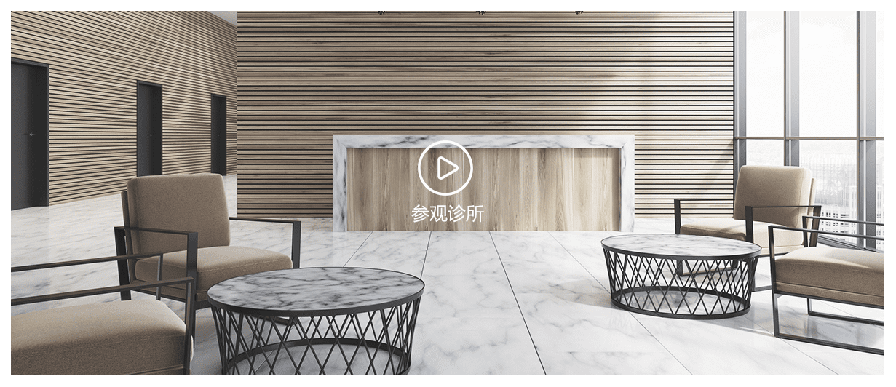

和雅诊所国内术后淋巴水肿康复第一品牌。
采用世界权威的CDT综合消肿疗法为核心，融合运动、作业及心理治疗为一体的特色综合疗法。
全方位的评估患者的身理、心理及社会功能，打造个性化康复疗程。
上肢淋巴水肿康复、下肢淋巴水肿康复
查看详情
防止产后下腰痛、骨盆稳定不良髋关节不适、盆底肌的损伤…
查看详情
颈椎病、肩膀疼、腰肌劳损、鼠标手，网球时、肌肉拉伤…
查看详情
青少年脊柱侧弯非手术康复、圆肩驼背、耸肩、含胸、头部前…
查看详情
曾任深圳人民医院康复中心主任，善用中西医结合的方法治疗淋巴水肿和各种康库治疗，尤擅对孕妇康复、运动康复、脊椎侧弯康复的治疗。
曾任深圳人民医院康复中心主任，善用中西医结合的方法治疗淋巴水肿和各种康库治疗，尤擅对孕妇康复、运动康复、脊椎侧弯康复的治疗。
曾任深圳人民医院康复中心主任，善用中西医结合的方法治疗淋巴水肿和各种康库治疗，尤擅对孕妇康复、运动康复、脊椎侧弯康复的治疗。
和雅诊所国内术后淋巴水肿康复第一品牌。 采用世界权威的CDT综合消肿疗法为核心，融合运动、作业及心理治疗为一体的特色综合疗法。 全方位的评估患者的身理、心理及社会功能，打造个性化康复疗程。

医疗新闻更多
焕然一新 全面开诊 WE ARE OPENNING !
和雅活动更多
焕然一新 全面开诊 WE ARE OPENNING !